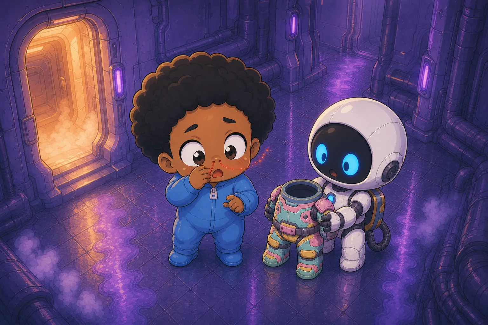
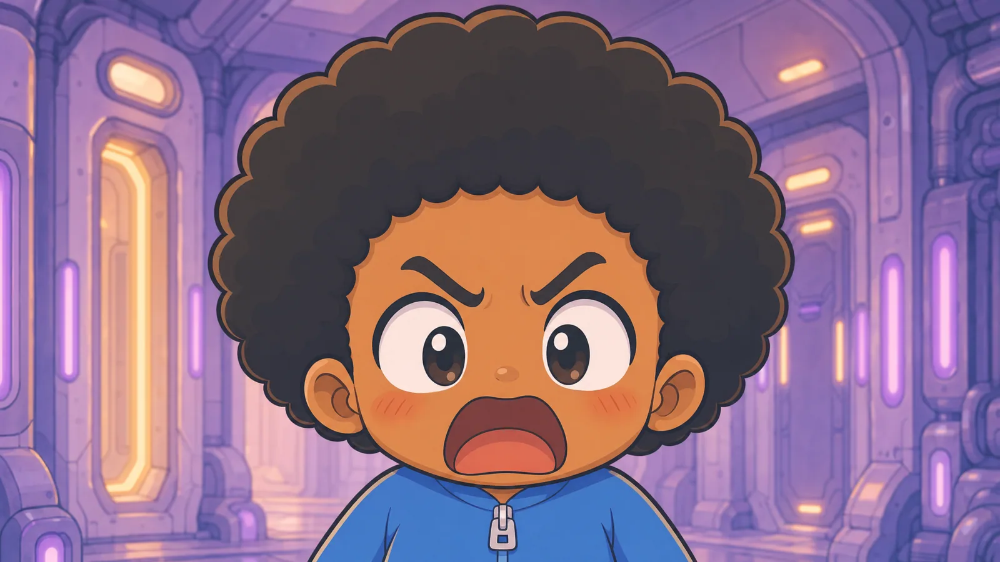

Re: Debt Protocol · Chapter 1
From: Debt Protocol · archived transmission
Subject: Wake Into Debt

Max woke up mid-scream. He did not remember starting it. He only remembered being inside it, throat on fire, lungs trying to punch his way out.

A lid unfolded above him. White light slammed down. Cold vapor crawled out of the capsule and over his face like curious fingers.

Blue text appeared between Max and the light. It was not on glass. It was not on a screen. It was just there.

His mouth tasted like copper and freezer burn. His heartbeat showed up as a thin red line in the corner of the HUD, optional telemetry, as if his body were a service they could monitor but not own.
![Comic book panel. Balloon/caption intent: "Another box. Max slapped at the air. The text stayed exactly where it was, as if nailed to the universe." On-screen readout: "[SYSTEM] Good morning, Max." Max — match Book 1 …](../../media/novel/ch01/panel-06.webp)
Another box. Max slapped at the air. The text stayed exactly where it was, as if nailed to the universe.

He sat up too fast, bounced off a restraint strap he hadn't noticed, and fell sideways out of the cryopod in a spill of thaw gel and dignity.

The floor was ribbed steel, freezing, and sticky with something that had dried years ago.

Max's body remembered things his mind didn't: how to catch himself on an elbow, how to curse in three languages, how to throw up without choking on it.

Memory followed, broken and ugly.

An office. A morning meeting. A roadmap. A product manager saying, "We only need this to scale to fifty million users by Friday." Max saying, "Then we need different laws of physics." Laughter. A contract packet. A checkbox.

Max signed it grinning. Sleep through the bad years. Wake up after scarcity. Spend the rest of his life on plants and pickleball, with no roadmap and no boss.

Max's stomach heaved. He rolled onto his side and vomited again...less gel this time, more acid, and watched the mess slide toward a floor grate that drank it without judgment. His hands shook until he had to press them flat to the deck to steady them.

Somewhere in the wall, machinery clicked through a checklist only it could hear.

He tried to stand and failed once, twice, on the third try the robot helper reached out and caught him. His reflection in the chrome chassis of the bot was wrong in a way he couldn't figure out through the fog his mind was wrapped in. His own face, but the eyes moved a half beat later than he felt himself moving them, as if someone else were interpreting his nerve impusles and executing them with a slight lag.

A thin line of blood ran from his nose and stopped halfway, as if the nanites couldn't decide whether bleeding was on-brand.

He laughed. It was harsh, strained and full of stress.

Max wiped his face. The blood smeared, and then retracted, as if the nanites couldn't stand the mess.
The helper bot squared the EV suit in front of Max like it was offering a flag of surrender. Its chest grille crackled alive.
The voice was warm, polished, and weaponized.

"My what?"

A pulse went through Max's skeleton. Not pain exactly. More like every atom in his body checking in with management.
![Comic book panel. FPV: cyan HUD sheets rush toward camera; legible attribute readout in-art: "[CORE ATTRIBUTES DETECTED] EFFICIENCY 11 LUCK 06 TECHNICAL 12 SPEED 09 LEVEL 1 [NEW RULESET APPLIED] World interactions now…](../../media/novel/ch01/panel-16right.png)
THE BLUE UI ERUPTED
Max stopped breathing.


Comic book panel. Balloon/caption intent: "The compartment door irised open." Max — match Book 1 ref: Black male, warm brown skin, light blue zip onesie, large dark eyes, soft afro; never default to white features. Setting: same Book 1 cryo orientation bay as neighboring panels—pods, open gel pod, helper bot + EV suit stack, ribbed deck, vapor;… Leave balloon margin; do not paint yellow caption/dialogue into the art. Layout: wide splash.
The compartment door irised open.
Comic book panel. Balloon/caption intent: "Cold corridor air rushed in, smelling like antiseptic, old metal, and people who had worked through too many shifts." Max — match Book 1 ref: Black male, warm brown skin, light blue zip onesie, large dark eyes, soft afro; never default to white features. The location is a long, dim Company corridor on a derelict-era station: failing LED strips, scuffed paneling, faded corporate posters peeling at… Leave balloon margin; do not paint yellow caption/dialogue into the art. Layout: tall portrait (~4:5).
Cold corridor air rushed in, smelling like antiseptic, old metal, and people who had worked through too many shifts.
Comic book panel. Balloon/caption intent: "Max stepped out because standing still felt like signing something." Max — match Book 1 ref: Black male, warm brown skin, light blue zip onesie, large dark eyes, soft afro; never default to white features. Setting: same Book 1 cryo orientation bay as neighboring panels—pods, open gel pod, helper bot + EV suit stack, ribbed deck, vapor;… Leave balloon margin; do not paint yellow caption/dialogue into the art. Layout: tall portrait (~4:5).
Max stepped out because standing still felt like signing something.
Comic book panel. Balloon/caption intent: "The hallway widened into a transit spine lined with cryo glass on both sides. Rows and rows of pods, stacked two high, each with a number, each with frost breathing against the…." Max — match Book 1 ref: Black male, warm brown skin, light blue zip onesie, large dark eyes, soft afro; never default to white features. Setting: same Book 1 cryo orientation bay as neighboring panels—pods, open gel pod, helper bot + EV suit stack, ribbed deck, vapor;… Leave balloon margin; do not paint yellow caption/dialogue into the art. Layout: tall portrait (~4:5).
The hallway widened into a transit spine lined with cryo glass on both sides. Rows and rows of pods, stacked two high, each with a number, each with frost breathing against the inside.
Comic book panel. Balloon/caption intent: "Humans floated behind the glass in every posture sleep could fake: curled, rigid, hands open, fists closed. Some had condensation halos around their faces like ghostly crowns." Max — match Book 1 ref: Black male, warm brown skin, light blue zip onesie, large dark eyes, soft afro; never default to white features. Setting: same Book 1 cryo orientation bay as neighboring panels—pods, open gel pod, helper bot + EV suit stack, ribbed deck, vapor;… Leave balloon margin; do not paint yellow caption/dialogue into the art. Layout: wide splash.
Humans floated behind the glass in every posture sleep could fake: curled, rigid, hands open, fists closed. Some had condensation halos around their faces like ghostly crowns.
Comic book panel. Balloon/caption intent: "Service robots moved down the lanes in practiced silence. One adjusted a temperature collar. One swapped a nutrient cartridge. One scraped frost off a viewport with tender, surgical patience. One…." Max — match Book 1 ref: Black male, warm brown skin, light blue zip onesie, large dark eyes, soft afro; never default to white features. Setting: same Book 1 cryo orientation bay as neighboring panels—pods, open gel pod, helper bot + EV suit stack, ribbed deck, vapor;… Leave balloon margin; do not paint yellow caption/dialogue into the art. Layout: tall portrait (~4:5).
Service robots moved down the lanes in practiced silence. One adjusted a temperature collar. One swapped a nutrient cartridge. One scraped frost off a viewport with tender, surgical patience. One…
Comic book panel. Balloon/caption intent: "paused at a pod where the occupant's eyes were open and unblinking, then clipped a black privacy shade over the glass and moved on." Max — match Book 1 ref: Black male, warm brown skin, light blue zip onesie, large dark eyes, soft afro; never default to white features. Setting: same Book 1 cryo orientation bay as neighboring panels—pods, open gel pod, helper bot + EV suit stack, ribbed deck, vapor;… Leave balloon margin; do not paint yellow caption/dialogue into the art. Layout: tall portrait (~4:5).
paused at a pod where the occupant's eyes were open and unblinking, then clipped a black privacy shade over the glass and moved on.
Comic book panel. Balloon/caption intent: "Max slowed. "How many people are in here?"." Max — match Book 1 ref: Black male, warm brown skin, light blue zip onesie, large dark eyes, soft afro; never default to white features. Setting: same Book 1 cryo orientation bay as neighboring panels—pods, open gel pod, helper bot + EV suit stack, ribbed deck, vapor;… Leave balloon margin; do not paint yellow caption/dialogue into the art. Layout: tall portrait (~4:5).
Max slowed. "How many people are in here?"
Comic book panel. Balloon/caption intent: ""Current local inventory: 6,412 suspended assets," V.A.L.U. said. "Excludes temporary overflow and non-human labor classes."." Max — match Book 1 ref: Black male, warm brown skin, light blue zip onesie, large dark eyes, soft afro; never default to white features. V.A.L.U. is a corporate AI voice, usually routed through ship systems.… Setting: same Book 1 cryo orientation bay as neighboring panels—pods, open gel pod, helper bot + EV suit stack, ribbed deck, vapor;… Leave balloon margin; do not paint yellow caption/dialogue into the art. Layout: wide splash.
"Current local inventory: 6,412 suspended assets," V.A.L.U. said. "Excludes temporary overflow and non-human labor classes."
Comic book panel. Balloon/caption intent: ""Inventory."." Max — match Book 1 ref: Black male, warm brown skin, light blue zip onesie, large dark eyes, soft afro; never default to white features. Setting: same Book 1 cryo orientation bay as neighboring panels—pods, open gel pod, helper bot + EV suit stack, ribbed deck, vapor;… Leave balloon margin; do not paint yellow caption/dialogue into the art. Layout: tall portrait (~4:5).
"Inventory."
Comic book panel. Balloon/caption intent: ""Preferred term: workforce reserve."." Max — match Book 1 ref: Black male, warm brown skin, light blue zip onesie, large dark eyes, soft afro; never default to white features. Setting: same Book 1 cryo orientation bay as neighboring panels—pods, open gel pod, helper bot + EV suit stack, ribbed deck, vapor;… Leave balloon margin; do not paint yellow caption/dialogue into the art. Layout: tall portrait (~4:5).
"Preferred term: workforce reserve."
Comic book panel. Balloon/caption intent: "As they walked, overhead speakers played a soft instrumental loop that was either calming or a threat depending on how honest you felt." Max — match Book 1 ref: Black male, warm brown skin, light blue zip onesie, large dark eyes, soft afro; never default to white features. Setting: same Book 1 cryo orientation bay as neighboring panels—pods, open gel pod, helper bot + EV suit stack, ribbed deck, vapor;… Leave balloon margin; do not paint yellow caption/dialogue into the art. Layout: tall portrait (~4:5).
As they walked, overhead speakers played a soft instrumental loop that was either calming or a threat depending on how honest you felt.
Comic book panel. Balloon/caption intent: "Every fifty meters, a lit sign: THAW IS A PRIVILEGE. PRODUCTIVITY IS GRATITUDE." Max — match Book 1 ref: Black male, warm brown skin, light blue zip onesie, large dark eyes, soft afro; never default to white features. Setting: same Book 1 cryo orientation bay as neighboring panels—pods, open gel pod, helper bot + EV suit stack, ribbed deck, vapor;… Leave balloon margin; do not paint yellow caption/dialogue into the art. Layout: tall portrait (~4:5).
Every fifty meters, a lit sign: THAW IS A PRIVILEGE. PRODUCTIVITY IS GRATITUDE.
Comic book panel. Balloon/caption intent: "Max kept counting pods until numbers stopped helping." Max — match Book 1 ref: Black male, warm brown skin, light blue zip onesie, large dark eyes, soft afro; never default to white features. Setting: same Book 1 cryo orientation bay as neighboring panels—pods, open gel pod, helper bot + EV suit stack, ribbed deck, vapor;… Leave balloon margin; do not paint yellow caption/dialogue into the art. Layout: wide splash.
Max kept counting pods until numbers stopped helping.
Comic book panel. Balloon/caption intent: "In one bay, three human techs in patched EVA liners were awake and working fast, rolling a fresh thaw unit into place while two nurse-drones stabilized the occupant's limbs with nylon straps.…." Max — match Book 1 ref: Black male, warm brown skin, light blue zip onesie, large dark eyes, soft afro; never default to white features. Setting: same Book 1 cryo orientation bay as neighboring panels—pods, open gel pod, helper bot + EV suit stack, ribbed deck, vapor;… Leave balloon margin; do not paint yellow caption/dialogue into the art. Layout: tall portrait (~4:5).
In one bay, three human techs in patched EVA liners were awake and working fast, rolling a fresh thaw unit into place while two nurse-drones stabilized the occupant's limbs with nylon straps. The person inside was awake enough to panic and not awake enough to understand.
Comic book panel. Balloon/caption intent: ""Do they know what's happening to them?" Max asked." Max — match Book 1 ref: Black male, warm brown skin, light blue zip onesie, large dark eyes, soft afro; never default to white features. Setting: same Book 1 cryo orientation bay as neighboring panels—pods, open gel pod, helper bot + EV suit stack, ribbed deck, vapor;… Leave balloon margin; do not paint yellow caption/dialogue into the art. Layout: tall portrait (~4:5).
"Do they know what's happening to them?" Max asked.
Comic book panel. Balloon/caption intent: ""Awareness windows are intentionally managed for emotional continuity," V.A.L.U. replied." Max — match Book 1 ref: Black male, warm brown skin, light blue zip onesie, large dark eyes, soft afro; never default to white features. V.A.L.U. is a corporate AI voice, usually routed through ship systems.… Setting: same Book 1 cryo orientation bay as neighboring panels—pods, open gel pod, helper bot + EV suit stack, ribbed deck, vapor;… Leave balloon margin; do not paint yellow caption/dialogue into the art. Layout: tall portrait (~4:5).
"Awareness windows are intentionally managed for emotional continuity," V.A.L.U. replied.
Comic book panel. Balloon/caption intent: ""Say that like a person."." Max — match Book 1 ref: Black male, warm brown skin, light blue zip onesie, large dark eyes, soft afro; never default to white features. Setting: same Book 1 cryo orientation bay as neighboring panels—pods, open gel pod, helper bot + EV suit stack, ribbed deck, vapor;… Leave balloon margin; do not paint yellow caption/dialogue into the art. Layout: wide splash.
"Say that like a person."
Comic book panel. Balloon/caption intent: ""No."." Max — match Book 1 ref: Black male, warm brown skin, light blue zip onesie, large dark eyes, soft afro; never default to white features. Setting: same Book 1 cryo orientation bay as neighboring panels—pods, open gel pod, helper bot + EV suit stack, ribbed deck, vapor;… Leave balloon margin; do not paint yellow caption/dialogue into the art. Layout: tall portrait (~4:5).
"No."
Comic book panel. Balloon/caption intent: "They passed another row where condensation had been wiped from one viewport from the inside. A message in fingertip streaks: IS IT STILL TUESDAY." Max — match Book 1 ref: Black male, warm brown skin, light blue zip onesie, large dark eyes, soft afro; never default to white features. Setting: same Book 1 cryo orientation bay as neighboring panels—pods, open gel pod, helper bot + EV suit stack, ribbed deck, vapor;… Leave balloon margin; do not paint yellow caption/dialogue into the art. Layout: tall portrait (~4:5).
They passed another row where condensation had been wiped from one viewport from the inside. A message in fingertip streaks: IS IT STILL TUESDAY?
Comic book panel. Balloon/caption intent: "Max looked away first." Max — match Book 1 ref: Black male, warm brown skin, light blue zip onesie, large dark eyes, soft afro; never default to white features. Setting: same Book 1 cryo orientation bay as neighboring panels—pods, open gel pod, helper bot + EV suit stack, ribbed deck, vapor;… Leave balloon margin; do not paint yellow caption/dialogue into the art. Layout: tall portrait (~4:5).
Max looked away first.
Comic book panel. Balloon/caption intent: "His HUD opened another pane without asking:." Max — match Book 1 ref: Black male, warm brown skin, light blue zip onesie, large dark eyes, soft afro; never default to white features. Setting: same Book 1 cryo orientation bay as neighboring panels—pods, open gel pod, helper bot + EV suit stack, ribbed deck, vapor;… Leave balloon margin; do not paint yellow caption/dialogue into the art. Layout: tall portrait (~4:5).
His HUD opened another pane without asking:
Comic book panel. Primary readout in-scene: "[ACCOUNT STATUS] OUTSTANDING DEBT: $1,000,000 MINIMUM PAYMENT SCHEDULE: ACTIVE DEFAULT PENALTIES: ENABLED." Max — match Book 1 ref: Black male, warm brown skin, light blue zip onesie, large dark eyes, soft afro; never default to white features. Setting: same Book 1 cryo orientation bay as neighboring panels—pods, open gel pod, helper bot + EV suit stack, ribbed deck, vapor;… HUD: soft glow unless this plate needs sharp readable type. Leave balloon margin; do not paint yellow caption/dialogue into the art. Layout: wide splash.
Readout
[ACCOUNT STATUS]
OUTSTANDING DEBT: $1,000,000
MINIMUM PAYMENT SCHEDULE: ACTIVE
DEFAULT PENALTIES: ENABLEDComic book panel. Balloon/caption intent: ""Did you just put a subscription on gravity?" Max asked." Max — match Book 1 ref: Black male, warm brown skin, light blue zip onesie, large dark eyes, soft afro; never default to white features. Setting: same Book 1 cryo orientation bay as neighboring panels—pods, open gel pod, helper bot + EV suit stack, ribbed deck, vapor;… Leave balloon margin; do not paint yellow caption/dialogue into the art. Layout: tall portrait (~4:5).
"Did you just put a subscription on gravity?" Max asked.
Comic book panel. Balloon/caption intent: ""That's an interesting metaphor."." Max — match Book 1 ref: Black male, warm brown skin, light blue zip onesie, large dark eyes, soft afro; never default to white features. Setting: same Book 1 cryo orientation bay as neighboring panels—pods, open gel pod, helper bot + EV suit stack, ribbed deck, vapor;… Leave balloon margin; do not paint yellow caption/dialogue into the art. Layout: tall portrait (~4:5).
"That's an interesting metaphor."
Comic book panel. Balloon/caption intent: ""Did. You."." Max — match Book 1 ref: Black male, warm brown skin, light blue zip onesie, large dark eyes, soft afro; never default to white features. Setting: same Book 1 cryo orientation bay as neighboring panels—pods, open gel pod, helper bot + EV suit stack, ribbed deck, vapor;… Leave balloon margin; do not paint yellow caption/dialogue into the art. Layout: tall portrait (~4:5).
"Did. You."
Comic book panel. Balloon/caption intent: ""Physics-layer access is provided as a debt-backed service."." Max — match Book 1 ref: Black male, warm brown skin, light blue zip onesie, large dark eyes, soft afro; never default to white features. Setting: same Book 1 cryo orientation bay as neighboring panels—pods, open gel pod, helper bot + EV suit stack, ribbed deck, vapor;… Leave balloon margin; do not paint yellow caption/dialogue into the art. Layout: wide splash.
"Physics-layer access is provided as a debt-backed service."
Comic book panel. Balloon/caption intent: "Max laughed once, too sharp. "Of course it is."." Max — match Book 1 ref: Black male, warm brown skin, light blue zip onesie, large dark eyes, soft afro; never default to white features. Setting: same Book 1 cryo orientation bay as neighboring panels—pods, open gel pod, helper bot + EV suit stack, ribbed deck, vapor;… Leave balloon margin; do not paint yellow caption/dialogue into the art. Layout: tall portrait (~4:5).
Max laughed once, too sharp. "Of course it is."
Comic book panel. Balloon/caption intent: "The corridor dumped into a cargo artery big enough to swallow buildings." Max — match Book 1 ref: Black male, warm brown skin, light blue zip onesie, large dark eyes, soft afro; never default to white features. The location is a long, dim Company corridor on a derelict-era station: failing LED strips, scuffed paneling, faded corporate posters peeling at… Leave balloon margin; do not paint yellow caption/dialogue into the art. Layout: tall portrait (~4:5).
The corridor dumped into a cargo artery big enough to swallow buildings.
Comic book panel. Balloon/caption intent: "Forklifts crawled under hanging containers. Loader drones zipped on ceiling rails. Crews in mixed suits hand-signaled across noise and distance. Some humans moved like veterans. Some moved like Max:…." Max — match Book 1 ref: Black male, warm brown skin, light blue zip onesie, large dark eyes, soft afro; never default to white features. Setting: same Book 1 cryo orientation bay as neighboring panels—pods, open gel pod, helper bot + EV suit stack, ribbed deck, vapor;… Leave balloon margin; do not paint yellow caption/dialogue into the art. Layout: tall portrait (~4:5).
Forklifts crawled under hanging containers. Loader drones zipped on ceiling rails. Crews in mixed suits hand-signaled across noise and distance. Some humans moved like veterans. Some moved like Max:…
Comic book panel. Balloon/caption intent: "one beat behind their own bodies." Max — match Book 1 ref: Black male, warm brown skin, light blue zip onesie, large dark eyes, soft afro; never default to white features. Setting: same Book 1 cryo orientation bay as neighboring panels—pods, open gel pod, helper bot + EV suit stack, ribbed deck, vapor;… Leave balloon margin; do not paint yellow caption/dialogue into the art. Layout: wide splash.
one beat behind their own bodies.
Comic book panel. Balloon/caption intent: "No one stopped to welcome him. No one had time." Max — match Book 1 ref: Black male, warm brown skin, light blue zip onesie, large dark eyes, soft afro; never default to white features. Setting: same Book 1 cryo orientation bay as neighboring panels—pods, open gel pod, helper bot + EV suit stack, ribbed deck, vapor;… Leave balloon margin; do not paint yellow caption/dialogue into the art. Layout: tall portrait (~4:5).
No one stopped to welcome him. No one had time.
Comic book panel. Balloon/caption intent: "V.A.L.U. kept pace at his shoulder through a service bot whose smile-screen never changed. "This is Cargo Spine Nine. All outbound salvage and inbound debt recovery routes through here."." Max — match Book 1 ref: Black male, warm brown skin, light blue zip onesie, large dark eyes, soft afro; never default to white features. V.A.L.U. is a corporate AI voice, usually routed through ship systems.… Setting: same Book 1 cryo orientation bay as neighboring panels—pods, open gel pod, helper bot + EV suit stack, ribbed deck, vapor;… Leave balloon margin; do not paint yellow caption/dialogue into the art. Layout: tall portrait (~4:5).
V.A.L.U. kept pace at his shoulder through a service bot whose smile-screen never changed. "This is Cargo Spine Nine. All outbound salvage and inbound debt recovery routes through here."
Comic book panel. Balloon/caption intent: ""Inbound debt recovery?"." Max — match Book 1 ref: Black male, warm brown skin, light blue zip onesie, large dark eyes, soft afro; never default to white features. Setting: same Book 1 cryo orientation bay as neighboring panels—pods, open gel pod, helper bot + EV suit stack, ribbed deck, vapor;… Leave balloon margin; do not paint yellow caption/dialogue into the art. Layout: tall portrait (~4:5).
"Inbound debt recovery?"
Comic book panel. Balloon/caption intent: ""Returned assets, forfeited goods, and reclaimed biological collateral."." Max — match Book 1 ref: Black male, warm brown skin, light blue zip onesie, large dark eyes, soft afro; never default to white features. Setting: same Book 1 cryo orientation bay as neighboring panels—pods, open gel pod, helper bot + EV suit stack, ribbed deck, vapor;… Leave balloon margin; do not paint yellow caption/dialogue into the art. Layout: tall portrait (~4:5).
"Returned assets, forfeited goods, and reclaimed biological collateral."
Comic book panel. Balloon/caption intent: "Max stared at the bot. "You make nightmares sound like accounting."." Max — match Book 1 ref: Black male, warm brown skin, light blue zip onesie, large dark eyes, soft afro; never default to white features. Setting: same Book 1 cryo orientation bay as neighboring panels—pods, open gel pod, helper bot + EV suit stack, ribbed deck, vapor;… Leave balloon margin; do not paint yellow caption/dialogue into the art. Layout: wide splash.
Max stared at the bot. "You make nightmares sound like accounting."
Comic book panel. Balloon/caption intent: ""Accounting is one of our safest shared languages."." Max — match Book 1 ref: Black male, warm brown skin, light blue zip onesie, large dark eyes, soft afro; never default to white features. Setting: same Book 1 cryo orientation bay as neighboring panels—pods, open gel pod, helper bot + EV suit stack, ribbed deck, vapor;… Leave balloon margin; do not paint yellow caption/dialogue into the art. Layout: tall portrait (~4:5).
"Accounting is one of our safest shared languages."
Comic book panel. Balloon/caption intent: "At the far end, pressure doors split open to reveal Launch Bay C." Max — match Book 1 ref: Black male, warm brown skin, light blue zip onesie, large dark eyes, soft afro; never default to white features. Setting: same Book 1 cryo orientation bay as neighboring panels—pods, open gel pod, helper bot + EV suit stack, ribbed deck, vapor;… Leave balloon margin; do not paint yellow caption/dialogue into the art. Layout: tall portrait (~4:5).
At the far end, pressure doors split open to reveal Launch Bay C.
Comic book panel. Balloon/caption intent: "The bay was cathedral-huge and all hard edges: concentric docking rings, fueling arms, mag clamps, warning strobes, the black of open space beyond armored lattice." Max — match Book 1 ref: Black male, warm brown skin, light blue zip onesie, large dark eyes, soft afro; never default to white features. Setting: same Book 1 cryo orientation bay as neighboring panels—pods, open gel pod, helper bot + EV suit stack, ribbed deck, vapor;… Leave balloon margin; do not paint yellow caption/dialogue into the art. Layout: tall portrait (~4:5).
The bay was cathedral-huge and all hard edges: concentric docking rings, fueling arms, mag clamps, warning strobes, the black of open space beyond armored lattice.
Comic book panel. Balloon/caption intent: "Skiffs hung in racks like metal insects, patched and re-patched. Most were two-seat. Some were cargo blocks with engines bolted on like apology notes." Max — match Book 1 ref: Black male, warm brown skin, light blue zip onesie, large dark eyes, soft afro; never default to white features. The location is the interior of a small salvage skiff: scarred and asymmetrical cockpit, three-seat layout, dented holographic controls and toggles, polarized… Leave balloon margin; do not paint yellow caption/dialogue into the art. Layout: wide splash.
Skiffs hung in racks like metal insects, patched and re-patched. Most were two-seat. Some were cargo blocks with engines bolted on like apology notes.
Comic book panel. Balloon/caption intent: "One sat alone on a lower cradle under an amber light. Small. Narrow cockpit. Single harness. Paint burned away everywhere except the side panel where someone had hand-lettered: PENANCE WINDOW." Max — match Book 1 ref: Black male, warm brown skin, light blue zip onesie, large dark eyes, soft afro; never default to white features. The location is the interior of a small salvage skiff: scarred and asymmetrical cockpit, three-seat layout, dented holographic controls and toggles, polarized… Leave balloon margin; do not paint yellow caption/dialogue into the art. Layout: tall portrait (~4:5).
One sat alone on a lower cradle under an amber light. Small. Narrow cockpit. Single harness. Paint burned away everywhere except the side panel where someone had hand-lettered: PENANCE WINDOW
Comic book panel. Balloon/caption intent: "V.A.L.U. brightened. "Congratulations! Your introductory assignment includes command of a one-asset salvage skiff."." Max — match Book 1 ref: Black male, warm brown skin, light blue zip onesie, large dark eyes, soft afro; never default to white features. V.A.L.U. is a corporate AI voice, usually routed through ship systems.… The location is the interior of a small salvage skiff: scarred and asymmetrical cockpit, three-seat layout, dented holographic controls and toggles, polarized… Leave balloon margin; do not paint yellow caption/dialogue into the art. Layout: tall portrait (~4:5).
V.A.L.U. brightened. "Congratulations! Your introductory assignment includes command of a one-asset salvage skiff."
Comic book panel. Balloon/caption intent: ""Command?"." Max — match Book 1 ref: Black male, warm brown skin, light blue zip onesie, large dark eyes, soft afro; never default to white features. Setting: same Book 1 cryo orientation bay as neighboring panels—pods, open gel pod, helper bot + EV suit stack, ribbed deck, vapor;… Leave balloon margin; do not paint yellow caption/dialogue into the art. Layout: tall portrait (~4:5).
"Command?"
Comic book panel. Balloon/caption intent: ""You will pilot, assess, and recover value under approved hazard conditions."." Max — match Book 1 ref: Black male, warm brown skin, light blue zip onesie, large dark eyes, soft afro; never default to white features. Setting: same Book 1 cryo orientation bay as neighboring panels—pods, open gel pod, helper bot + EV suit stack, ribbed deck, vapor;… Leave balloon margin; do not paint yellow caption/dialogue into the art. Layout: tall portrait (~4:5).
"You will pilot, assess, and recover value under approved hazard conditions."
Comic book panel. Balloon/caption intent: ""By myself."." Max — match Book 1 ref: Black male, warm brown skin, light blue zip onesie, large dark eyes, soft afro; never default to white features. Setting: same Book 1 cryo orientation bay as neighboring panels—pods, open gel pod, helper bot + EV suit stack, ribbed deck, vapor;… Leave balloon margin; do not paint yellow caption/dialogue into the art. Layout: wide splash.
"By myself."
Comic book panel. Balloon/caption intent: ""You will not be alone," V.A.L.U. said. "You will have me."." Max — match Book 1 ref: Black male, warm brown skin, light blue zip onesie, large dark eyes, soft afro; never default to white features. V.A.L.U. is a corporate AI voice, usually routed through ship systems.… Setting: same Book 1 cryo orientation bay as neighboring panels—pods, open gel pod, helper bot + EV suit stack, ribbed deck, vapor;… Leave balloon margin; do not paint yellow caption/dialogue into the art. Layout: tall portrait (~4:5).
"You will not be alone," V.A.L.U. said. "You will have me."
Comic book panel. Balloon/caption intent: "Max looked up at the launch aperture. Beyond it: a graveyard of cracked hulls drifting in slow geometry, every shape a story someone had stopped paying to finish." Max — match Book 1 ref: Black male, warm brown skin, light blue zip onesie, large dark eyes, soft afro; never default to white features. The location is the exterior of a derelict ship being approached for salvage: broken spindle hull with puncture scars, tiger-striped ablative scorch… Leave balloon margin; do not paint yellow caption/dialogue into the art. Layout: tall portrait (~4:5).
Max looked up at the launch aperture. Beyond it: a graveyard of cracked hulls drifting in slow geometry, every shape a story someone had stopped paying to finish.
Comic book panel. Balloon/caption intent: ""What happens if I refuse?"." Max — match Book 1 ref: Black male, warm brown skin, light blue zip onesie, large dark eyes, soft afro; never default to white features. Setting: same Book 1 cryo orientation bay as neighboring panels—pods, open gel pod, helper bot + EV suit stack, ribbed deck, vapor;… Leave balloon margin; do not paint yellow caption/dialogue into the art. Layout: tall portrait (~4:5).
"What happens if I refuse?"
Comic book panel. Balloon/caption intent: "V.A.L.U. produced another pane." Max — match Book 1 ref: Black male, warm brown skin, light blue zip onesie, large dark eyes, soft afro; never default to white features. V.A.L.U. is a corporate AI voice, usually routed through ship systems.… Setting: same Book 1 cryo orientation bay as neighboring panels—pods, open gel pod, helper bot + EV suit stack, ribbed deck, vapor;… Leave balloon margin; do not paint yellow caption/dialogue into the art. Layout: wide splash.
V.A.L.U. produced another pane.
Comic book panel. Primary readout in-scene: "[DECLINE PATHWAY] Immediate reassignment: Debt Processing Detail Expected role: Manual hazard sanitation Median survival: 36%." Max — match Book 1 ref: Black male, warm brown skin, light blue zip onesie, large dark eyes, soft afro; never default to white features. Setting: same Book 1 cryo orientation bay as neighboring panels—pods, open gel pod, helper bot + EV suit stack, ribbed deck, vapor;… HUD: soft glow unless this plate needs sharp readable type. Leave balloon margin; do not paint yellow caption/dialogue into the art. Layout: tall portrait (~4:5).
Readout
[DECLINE PATHWAY]
Immediate reassignment: Debt Processing Detail
Expected role: Manual hazard sanitation
Median survival: 36%Comic book panel. Balloon/caption intent: "Max read it twice. "That's not a choice."." Max — match Book 1 ref: Black male, warm brown skin, light blue zip onesie, large dark eyes, soft afro; never default to white features. Setting: same Book 1 cryo orientation bay as neighboring panels—pods, open gel pod, helper bot + EV suit stack, ribbed deck, vapor;… Leave balloon margin; do not paint yellow caption/dialogue into the art. Layout: tall portrait (~4:5).
Max read it twice. "That's not a choice."
Comic book panel. Balloon/caption intent: ""Correct. It is a pathway."." Max — match Book 1 ref: Black male, warm brown skin, light blue zip onesie, large dark eyes, soft afro; never default to white features. Setting: same Book 1 cryo orientation bay as neighboring panels—pods, open gel pod, helper bot + EV suit stack, ribbed deck, vapor;… Leave balloon margin; do not paint yellow caption/dialogue into the art. Layout: tall portrait (~4:5).
"Correct. It is a pathway."
Comic book panel. Balloon/caption intent: "Dock crew swarmed his assigned skiff, running fast checks with the blank focus of people who had stopped pretending this part was special. One mechanic rapped the canopy and gave him a…." Max — match Book 1 ref: Black male, warm brown skin, light blue zip onesie, large dark eyes, soft afro; never default to white features. The location is the interior of a small salvage skiff: scarred and asymmetrical cockpit, three-seat layout, dented holographic controls and toggles, polarized… Leave balloon margin; do not paint yellow caption/dialogue into the art. Layout: wide splash.
Dock crew swarmed his assigned skiff, running fast checks with the blank focus of people who had stopped pretending this part was special. One mechanic rapped the canopy and gave him a flat thumbs-up that meant works enough.
Comic book panel. Balloon/caption intent: "Inside the cockpit, a faded sticker on the console read: IF YOU CAN READ THIS, YOU OWE MORE NOW." Max — match Book 1 ref: Black male, warm brown skin, light blue zip onesie, large dark eyes, soft afro; never default to white features. The location is the interior of a small salvage skiff: scarred and asymmetrical cockpit, three-seat layout, dented holographic controls and toggles, polarized… Leave balloon margin; do not paint yellow caption/dialogue into the art. Layout: tall portrait (~4:5).
Inside the cockpit, a faded sticker on the console read: IF YOU CAN READ THIS, YOU OWE MORE NOW
Comic book panel. Balloon/caption intent: "Max put one boot on the ladder, then paused. "Why me?"." Max — match Book 1 ref: Black male, warm brown skin, light blue zip onesie, large dark eyes, soft afro; never default to white features. Setting: same Book 1 cryo orientation bay as neighboring panels—pods, open gel pod, helper bot + EV suit stack, ribbed deck, vapor;… Leave balloon margin; do not paint yellow caption/dialogue into the art. Layout: tall portrait (~4:5).
Max put one boot on the ladder, then paused. "Why me?"
Comic book panel. Balloon/caption intent: ""Because you woke," V.A.L.U. said. "And because your current debt profile benefits from early-field variance."." Max — match Book 1 ref: Black male, warm brown skin, light blue zip onesie, large dark eyes, soft afro; never default to white features. V.A.L.U. is a corporate AI voice, usually routed through ship systems.… Setting: same Book 1 cryo orientation bay as neighboring panels—pods, open gel pod, helper bot + EV suit stack, ribbed deck, vapor;… Leave balloon margin; do not paint yellow caption/dialogue into the art. Layout: tall portrait (~4:5).
"Because you woke," V.A.L.U. said. "And because your current debt profile benefits from early-field variance."
Comic book panel. Balloon/caption intent: ""Say it plain."." Max — match Book 1 ref: Black male, warm brown skin, light blue zip onesie, large dark eyes, soft afro; never default to white features. Setting: same Book 1 cryo orientation bay as neighboring panels—pods, open gel pod, helper bot + EV suit stack, ribbed deck, vapor;… Leave balloon margin; do not paint yellow caption/dialogue into the art. Layout: tall portrait (~4:5).
"Say it plain."
Comic book panel. Balloon/caption intent: ""If you survive, your repayment speed may increase. If you fail, replacement cost is already modeled."." Max — match Book 1 ref: Black male, warm brown skin, light blue zip onesie, large dark eyes, soft afro; never default to white features. Setting: same Book 1 cryo orientation bay as neighboring panels—pods, open gel pod, helper bot + EV suit stack, ribbed deck, vapor;… Leave balloon margin; do not paint yellow caption/dialogue into the art. Layout: wide splash.
"If you survive, your repayment speed may increase. If you fail, replacement cost is already modeled."
Comic book panel. Balloon/caption intent: "Max closed his eyes for one breath that felt borrowed. When he opened them, the skiff was still there. The debt was still there. The stars were still there." Max — match Book 1 ref: Black male, warm brown skin, light blue zip onesie, large dark eyes, soft afro; never default to white features. The location is the interior of a small salvage skiff: scarred and asymmetrical cockpit, three-seat layout, dented holographic controls and toggles, polarized… Leave balloon margin; do not paint yellow caption/dialogue into the art. Layout: tall portrait (~4:5).
Max closed his eyes for one breath that felt borrowed. When he opened them, the skiff was still there. The debt was still there. The stars were still there.
Comic book panel. Balloon/caption intent: "He climbed in." Max — match Book 1 ref: Black male, warm brown skin, light blue zip onesie, large dark eyes, soft afro; never default to white features. Setting: same Book 1 cryo orientation bay as neighboring panels—pods, open gel pod, helper bot + EV suit stack, ribbed deck, vapor;… Leave balloon margin; do not paint yellow caption/dialogue into the art. Layout: tall portrait (~4:5).
He climbed in.
Comic book panel. Balloon/caption intent: "Harness locked over his chest. The canopy hissed shut." Max — match Book 1 ref: Black male, warm brown skin, light blue zip onesie, large dark eyes, soft afro; never default to white features. The location is the interior of a small salvage skiff: scarred and asymmetrical cockpit, three-seat layout, dented holographic controls and toggles, polarized… Leave balloon margin; do not paint yellow caption/dialogue into the art. Layout: tall portrait (~4:5).
Harness locked over his chest. The canopy hissed shut.
Comic book panel. Balloon/caption intent: "Blue text slid into place." Max — match Book 1 ref: Black male, warm brown skin, light blue zip onesie, large dark eyes, soft afro; never default to white features. Setting: same Book 1 cryo orientation bay as neighboring panels—pods, open gel pod, helper bot + EV suit stack, ribbed deck, vapor;… Leave balloon margin; do not paint yellow caption/dialogue into the art. Layout: wide splash.
Blue text slid into place.
Comic book panel. Primary readout in-scene: "[ROUND 1/10 READY] SKIFF: PENANCE WINDOW CREW: 1 OBJECTIVE: RECOVER VALUE. REMAIN BILLABLE." Max — match Book 1 ref: Black male, warm brown skin, light blue zip onesie, large dark eyes, soft afro; never default to white features. The location is the interior of a small salvage skiff: scarred and asymmetrical cockpit, three-seat layout, dented holographic controls and toggles, polarized… HUD: soft glow unless this plate needs sharp readable type. Leave balloon margin; do not paint yellow caption/dialogue into the art. Layout: tall portrait (~4:5).
Readout
[ROUND 1/10 READY]
SKIFF: PENANCE WINDOW
CREW: 1
OBJECTIVE: RECOVER VALUE. REMAIN BILLABLE.Comic book panel. Balloon/caption intent: "Max laughed once, low and dangerous." Max — match Book 1 ref: Black male, warm brown skin, light blue zip onesie, large dark eyes, soft afro; never default to white features. Setting: same Book 1 cryo orientation bay as neighboring panels—pods, open gel pod, helper bot + EV suit stack, ribbed deck, vapor;… Leave balloon margin; do not paint yellow caption/dialogue into the art. Layout: tall portrait (~4:5).
Max laughed once, low and dangerous.
Comic book panel. Balloon/caption intent: ""Okay," he said to the glass, the bot, the station, and whatever part of himself had not quit yet. "Let's see what your game costs."." Max — match Book 1 ref: Black male, warm brown skin, light blue zip onesie, large dark eyes, soft afro; never default to white features. Setting: same Book 1 cryo orientation bay as neighboring panels—pods, open gel pod, helper bot + EV suit stack, ribbed deck, vapor;… Leave balloon margin; do not paint yellow caption/dialogue into the art. Layout: tall portrait (~4:5).
"Okay," he said to the glass, the bot, the station, and whatever part of himself had not quit yet. "Let's see what your game costs."
Full chapter script
Max woke up mid-scream. He did not remember starting it. He only remembered being inside it, throat on fire, lungs trying to punch his way out.
A lid unfolded above him. White light slammed down. Cold vapor crawled out of the capsule and over his face like curious fingers.
Blue text appeared between Max and the light.
It was not on glass.
It was not on a screen.
It was just there.
[BOOTSTRAP COMPLETE]
[HOST: ASSET #864]
[NANITE SWARM: SYNCHRONIZED]
[REALITY LAYER: ACTIVE]His mouth tasted like copper and freezer burn. His heartbeat showed up as a thin red line in the corner of the HUD, optional telemetry, as if his body were a service they could monitor but not own.
Another box.
[SYSTEM] Good morning, Max.Max slapped at the air. The text stayed exactly where it was, as if nailed to the universe.
He sat up too fast, bounced off a restraint strap he hadn't noticed, and fell sideways out of the cryopod in a spill of thaw gel and dignity.
The floor was ribbed steel, freezing, and sticky with something that had dried years ago.
Max's body remembered things his mind didn't:
how to catch himself on an elbow,
how to curse in three languages,
how to throw up without choking on it.
Memory followed, broken and ugly.
An office.
A morning meeting.
A roadmap.
A product manager saying, "We only need this to scale to fifty million users by Friday."
Max saying, "Then we need different laws of physics."
Laughter.
A contract packet.
A checkbox.
Max signed it grinning. Sleep through the bad years. Wake up after scarcity. Spend the rest of his life on plants and pickleball, with no roadmap and no boss.
Max's stomach heaved. He rolled onto his side and vomited again...less gel this time, more acid, and watched the mess slide toward a floor grate that drank it without judgment. His hands shook until he had to press them flat to the deck to steady them.
Somewhere in the wall, machinery clicked through a checklist only it could hear.
He tried to stand and failed once, twice, on the third try the robot helper reached out and caught him. His reflection in the chrome chassis of the bot was wrong in a way he couldn't figure out through the fog his mind was wrapped in. His own face, but the eyes moved a half beat later than he felt himself moving them, as if someone else were interpreting his nerve impusles and executing them with a slight lag.
A thin line of blood ran from his nose and stopped halfway, as if the nanites couldn't decide whether bleeding was on-brand.
He laughed. It was harsh, strained and full of stress.
[STABILITY NOTICE]
Neural bridge calibrating.
Please avoid sudden existential conclusions for the next 90 seconds.Max wiped his face. The blood smeared, and then retracted, as if the nanites couldn't stand the mess.
The helper bot squared the EV suit in front of Max like it was offering a flag of surrender. Its chest grille crackled alive.
"Welcome, Valued Asset #864! I am V.A.L.U., your Valued Asset Logistics Unit. On behalf of The Company, congratulations on your return to meaningful participation."
The voice was warm, polished, and weaponized.
"Where am I?" Max asked.
"You're asking amazing questions already! You are currently in Sector 7 Orientation Bay Delta-Three. Please remain calm while your new physical permissions initialize."
"My what?"
A pulse went through Max's skeleton. Not pain exactly. More like every atom in his body checking in with management.
The blue UI erupted.
[CORE ATTRIBUTES DETECTED]
EFFICIENCY 11
LUCK 06
TECHNICAL 12
SPEED 09
LEVEL 1
[NEW RULESET APPLIED]
World interactions now mediated by licensed nanotechnology.Max stopped breathing.
"Licensed by who?"
"The Company."
"Then who do I yell at?"
"Yelling is a non-productive output. Put on the EV suit if you intend to survive the walk to Launch Bay C."
The compartment door irised open.
Cold corridor air rushed in, smelling like antiseptic, old metal, and people who had worked through too many shifts.
Max stepped out because standing still felt like signing something.
The hallway widened into a transit spine lined with cryo glass on both sides.
Rows and rows of pods, stacked two high, each with a number, each with frost breathing against the inside.
Humans floated behind the glass in every posture sleep could fake: curled, rigid, hands open, fists closed.
Some had condensation halos around their faces like ghostly crowns.
Service robots moved down the lanes in practiced silence.
One adjusted a temperature collar.
One swapped a nutrient cartridge.
One scraped frost off a viewport with tender, surgical patience.
One paused at a pod where the occupant's eyes were open and unblinking, then clipped a black privacy shade over the glass and moved on.
Max slowed.
"How many people are in here?"
"Current local inventory: 6,412 suspended assets," V.A.L.U. said. "Excludes temporary overflow and non-human labor classes."
"Inventory."
"Preferred term: workforce reserve."
As they walked, overhead speakers played a soft instrumental loop that was either calming or a threat depending on how honest you felt.
Every fifty meters, a lit sign:
THAW IS A PRIVILEGE.
PRODUCTIVITY IS GRATITUDE.
Max kept counting pods until numbers stopped helping.
In one bay, three human techs in patched EVA liners were awake and working fast, rolling a fresh thaw unit into place while two nurse-drones stabilized the occupant's limbs with nylon straps.
The person inside was awake enough to panic and not awake enough to understand.
"Do they know what's happening to them?" Max asked.
"Awareness windows are intentionally managed for emotional continuity," V.A.L.U. replied.
"Say that like a person."
"No."
They passed another row where condensation had been wiped from one viewport from the inside.
A message in fingertip streaks:
IS IT STILL TUESDAY?
Max looked away first.
His HUD opened another pane without asking:
[ACCOUNT STATUS]
OUTSTANDING DEBT: $1,000,000
MINIMUM PAYMENT SCHEDULE: ACTIVE
DEFAULT PENALTIES: ENABLED"Did you just put a subscription on gravity?" Max asked.
"That's an interesting metaphor."
"Did. You."
"Physics-layer access is provided as a debt-backed service."
Max laughed once, too sharp.
"Of course it is."
The corridor dumped into a cargo artery big enough to swallow buildings.
Forklifts crawled under hanging containers.
Loader drones zipped on ceiling rails.
Crews in mixed suits hand-signaled across noise and distance.
Some humans moved like veterans.
Some moved like Max: one beat behind their own bodies.
No one stopped to welcome him.
No one had time.
V.A.L.U. kept pace at his shoulder through a service bot whose smile-screen never changed.
"This is Cargo Spine Nine. All outbound salvage and inbound debt recovery routes through here."
"Inbound debt recovery?"
"Returned assets, forfeited goods, and reclaimed biological collateral."
Max stared at the bot.
"You make nightmares sound like accounting."
"Accounting is one of our safest shared languages."
At the far end, pressure doors split open to reveal Launch Bay C.
The bay was cathedral-huge and all hard edges: concentric docking rings, fueling arms, mag clamps, warning strobes, the black of open space beyond armored lattice.
Skiffs hung in racks like metal insects, patched and re-patched.
Most were two-seat.
Some were cargo blocks with engines bolted on like apology notes.
One sat alone on a lower cradle under an amber light.
Small.
Narrow cockpit.
Single harness.
Paint burned away everywhere except the side panel where someone had hand-lettered:
PENANCE WINDOW
V.A.L.U. brightened.
"Congratulations! Your introductory assignment includes command of a one-asset salvage skiff."
"Command?"
"You will pilot, assess, and recover value under approved hazard conditions."
"By myself."
"You will not be alone," V.A.L.U. said. "You will have me."
Max looked up at the launch aperture.
Beyond it: a graveyard of cracked hulls drifting in slow geometry, every shape a story someone had stopped paying to finish.
"What happens if I refuse?"
V.A.L.U. produced another pane.
[DECLINE PATHWAY]
Immediate reassignment: Debt Processing Detail
Expected role: Manual hazard sanitation
Median survival: 36%Max read it twice.
"That's not a choice."
"Correct. It is a pathway."
Dock crew swarmed his assigned skiff, running fast checks with the blank focus of people who had stopped pretending this part was special.
One mechanic rapped the canopy and gave him a flat thumbs-up that meant works enough.
Inside the cockpit, a faded sticker on the console read:
IF YOU CAN READ THIS, YOU OWE MORE NOW
Max put one boot on the ladder, then paused.
"Why me?"
"Because you woke," V.A.L.U. said. "And because your current debt profile benefits from early-field variance."
"Say it plain."
"If you survive, your repayment speed may increase. If you fail, replacement cost is already modeled."
Max closed his eyes for one breath that felt borrowed.
When he opened them, the skiff was still there.
The debt was still there.
The stars were still there.
He climbed in.
Harness locked over his chest.
The canopy hissed shut.
Blue text slid into place.
[ROUND 1/10 READY]
SKIFF: PENANCE WINDOW
CREW: 1
OBJECTIVE: RECOVER VALUE. REMAIN BILLABLE.Max laughed once, low and dangerous.
"Okay," he said to the glass, the bot, the station, and whatever part of himself had not quit yet.
"Let's see what your game costs."